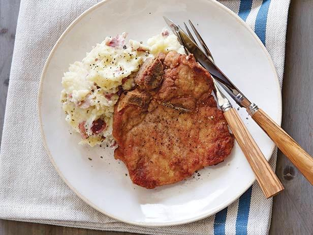

Few things are as easy to prepare as these pan-fried boneless pork chops. They take only minutes to prepare! The emphasis is on the great flavor of pork, so if you'd like more seasoning, go for it. For perfectly done chops, always use a meat thermometer.